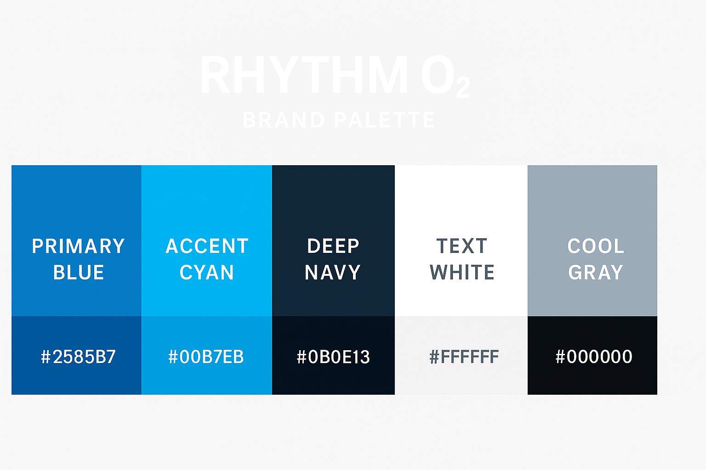

Overview
Rhythm O₂ is my own wellness concept—silent-disco breathwork for high-stress teams. I used it to run the full Launch by JA method: from raw idea to revenue-ready brand with systems that scale.
Challenge
Build a complete launch system—branding, checkout, booking, emails, and follow-up—while keeping the modern-lux feel. Minimal admin, maximum polish.
Result
- Seamless Stripe checkout + Payhip product delivery
- Branded Tally intake/waiver + auto confirmations
- Post-session resources + feedback delivered automatically
- Corporate deck + rates ready for HR/schools/ops
